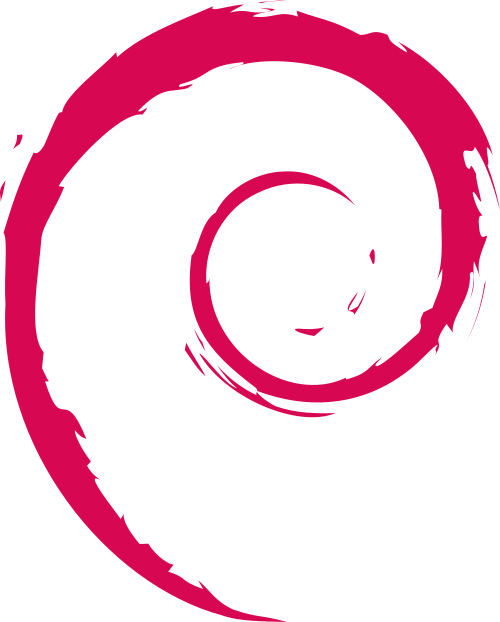
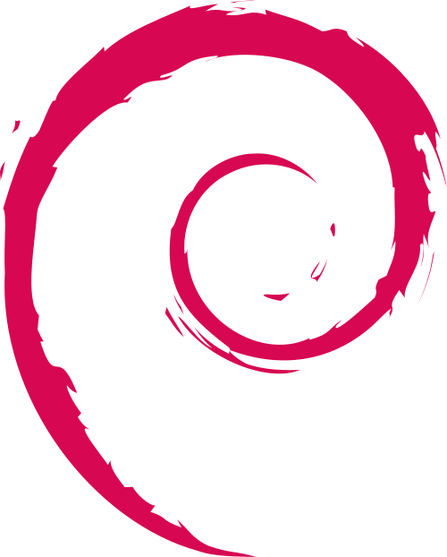

Systèmes d'exploitation
Je travaille personnellement dessus pendant mon temps libre.
Je l'utilise principalement dans le cadre de ma formation.
Je m'appelle Ambroise Donnet, étudiant en 2ᵉ année de BUT Informatique à l’Université de Lille, sur le campus de la Cité Scientifique à Villeneuve-d’Ascq. Curieux et motivé, je suis à la recherche d’une alternance en tant que développeur informatique. J’aime explorer de nouvelles technologies et enrichir mes compétences, que ce soit dans le cadre de mes études ou de projets personnels.
Dans le cadre de ma formation, j’ai l’opportunité de réaliser un stage à l’étranger, une expérience qui me permettra de développer mes capacités en anglais, bien que je sois au Québec, tout en découvrant d’autres approches professionnelles.
En dehors de mes études, je suis passionné par la natation et les jeux vidéo, et je travaille comme animateur pendant les vacances. Ces activités m’ont appris à être à la fois créatif, organisé, et à bien m’entendre avec des publics variés.
Je travaille personnellement dessus pendant mon temps libre.
Je l'utilise principalement dans le cadre de ma formation.


Anglais - niveau B2

Allemand - niveau A2

J'ai eu l'occasion de travailler en équipe dans de nombreux projets, tels que le jeu ludo-pédagogique *Infinite Dungeons* avec la méthode Agile, et d'autres encore.
Je suis tout autant capable d'improviser dans les situations où il le faut. J'exerce ces compétences surtout dans le cadre de mes jobs étudiants en animation, où il fallait s'adapter à chaque situation. Par ailleurs, je sais me débrouiller seul, comme en m'autoformant sur C# et JavaScript pour ce CV.
Je sais être créatif quand il le faut. Parfois même un peu trop en voulant dépasser mes objectifs. J'exerce cette créativité en tant qu'animateur, où il me faut chercher et inventer des jeux pour occuper mon groupe d'enfants.

J'ai passé mon baccalauréat au lycée Pierre Bayle à Sedan dans les Ardennes, avec les spécialités NSI (Numérique et Sciences Informatiques) et SES (Sciences Économiques et Sociales).

Je suis actuellement en 2ᵉ année de BUT Informatique à Villeneuve-d'Ascq, à l'IUT sur le campus de la Cité Scientifique. Je suis en parcours A : réalisation d'applications - conception, développement, validation.

Durant ma seconde année de BUT, j'ai fait partie du BDE informatique en tant que secrétaire. Nous avons organisé divers événements pour divertir les étudiants et leur proposer des activités facilitant la vie étudiante.
Je travaille comme animateur en centre d'accueil de mineurs pour la mairie de Sedan depuis trois ans pendant les grandes vacances, ce qui m'a permis de devenir vif, attentif, et capable de m'adapter à tout type de publics. Cela m'a aussi donné l'occasion d'établir un contact humain enrichissant.

Dans le cadre de ma formation, j'ai l'opportunité de partir au Québec pour un stage dans l'entreprise Createch. Ma mission sera d'automatiser le fonctionnement d'un logiciel de design 3D à l'aide de VBA et Python.
Je suis un grand joueur de jeux vidéo, comme League of Legends, Valorant, Marvel's Snap, Minecraft, Dofus, Hades 1 et 2, ou Apex Legends. Je joue surtout pour discuter et passer du temps avec mes amis.
Dans mon temps libre, je consacre une partie au développement de jeux. Récemment, j'ai commencé à participer à des game jams, ce qui me permet de développer de manière moins sérieuse qu'en cours ou au travail, tout en m'amusant.
Je regarde quelques films et séries, principalement des productions connues comme Umbrella Academy, WandaVision, Heartstopper, Loki, ou encore le film Dune.